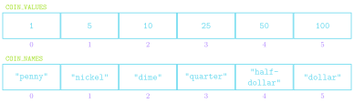

Arrays and Lists
Jed Rembold & Fred Agbo
February 28, 2024
Announcements
- Midterm Exam now on Friday this week.
- Problem Set 4 is posted and will be due next week Tuesday at 10pm
- Section Leaders are working on Project 1 feedback
- TechByte talk tomorrow at 11:30 in Ford 102
- I will be talking on Broadening Participation in Computing for Adults
- Polling continues https://www.polleverywhere.com/agbofred203
Review Question
Which of the below blocks of code will create the image to the right?
The window measures 500 x 200 pixels and the value of
d is 150.

x, y = 250 - d / 2, 100 - d / 2
a1 = GArc(x, y, d, d, 90, -180)
gw.add(a1)x, y = 250 - d, 100 - d
a1 = GArc(x, y, d, d, -180, 90)
gw.add(a1)x, y = 250 - d / 2, 100 - d / 2
a1 = GArc(x, y, d, d, 90, 180)
gw.add(a1)x, y = 250 - d / 2, 100 - d / 2
a1 = GArc(x, y, d, 180, -90)
gw.add(a1)Arrays and Lists
- From the earliest days, programming languages have supported the idea of an array, or an ordered sequence of values.
- Individual values in an array are called elements, and the number of elements is the length of the array.
- Each element’s position in the array is given by its index, with index numbers starting at 0 and extending up to 1 less than the length of the array
- Python implements the array concept in a bit more general form called a list.
Reminder: Making Lists
Created using square brackets with elements separated by commas:
COIN_VALUES = [1, 5, 10, 25, 50, 100] COIN_NAMES = [ "penny", "nickle", "dime", "quarter", "half-dollar", "dollar" ]Lists are commonly represented visually or conceptually as a series of numbered boxes:

What we already know
Can retrieve the value of any element in a list by writing the index of that element in square brackets after the list name
COIN_VALUES[3]⟶25COIN_NAMES[2]⟶"dime"
Can concatenate two lists to form a new list with elements from both
[1,2,3] + [4,5,6]⟶[1,2,3,4,5,6]
Can loop through each of the list elements in turn
for elem in my_list: # do stuff with elemwhere
elemis the name of the variable that will sequentially get assigned the value of every element inmy_list
Sequences
- Sound familiar? Lists are just like more general strings!
- Strings and lists are examples of a more general class of object in Python called sequences
- We already knew that all sequences support:
- The
lenfunction - Index numbering starting at 0
- Concatenation using
+or+= - Selection of an individual element using square brackets
- Looping over elements
- The
- We can now add:
- Negative index numbering counting backwards from the end
- Slicing in all forms
- Comparing sequences
- Repetition using
* - Inclusion testing using
inoperator
Understanding Check!
What would the below expression evaluate to?
[“One”, 2, True][-1:1:-1][1]
"n"2True- None of the above, or this will error
Mutants
- The most important difference between strings and lists is one of
mutability
- Strings we have already identified as being immutable: you can not change the individual elements
- Lists, in contrast, are mutable, which means that we can change or assign new values to the elements of a list
- Immutable objects have many advantages in programming:
- You don’t have to worry about if the values will change
- Immutable values can be more easily shared
- Immutable objects are easier to use with concurrent programs
- In some situations though, mutable objects are the perfect tool for the job
A Tutorial on Lists
- Thinking about mutable objects requires a shift in how we visualize our code interacting with the objects in memory
- Link here
cool = ['blue', 'violet']
warm = ['red', 'orange']
colors = [cool, warm]
other_colors = [['blue', 'violet'],
['red', 'orange']]
print(colors == other_colors)
print(colors is other_colors)
cool[0] = 'indigo'
warm = ['orange', 'yellow']
print(colors)
print(other_colors)For Reference
- When working with mutable objects, it is better to think of the variable as holding a reference to the object, rather than the actual contents of the object
- I find it useful to think of a reference as the “address” in memory where that object’s contents can be found
- This undeniably complicates things, as referencing a mutable object lets you change it, which will immediately be reflected in anything else that referenced that object
- Mutable objects can be terrific to work with, as their mutability makes them very flexible, but be wary of unexpected behavior
Project 2: Breakout!
- Project 2 is recreating the classic arcade game Breakout!
- Guide will be posted tomorrow, not due until March 12
- Focus on the midterm initially, but then consider getting a start this weekend
Breakout History
- The popular Breakout arcade game was released by Atari in 1976
- Atari founder Nolan Bushnell wanted a new game that would build on the success of the earlier game Pong. He assigned Steve Jobs to develop the game, promising a bonus if the game required a small number of chips.
- As Wikipedia tells the story, “Jobs had little specialized knowledge of circuit board design but knew [his friend Steve] Wozniak was capable of producing designs with a small number of chips. He convinced Wozniak to work with him, promising to split the fee evenly between them.”
- Wozniak completed the game design in four days, but Jobs never told him about the bonus offer. Jobs was paid \(\$5,000\), but Wozniak received only \(\$350\).
- Jobs and Wozniak co-founded Apple Computer the following year, which has grown to be the largest corporation in the world by market capitalization.
Breakout Basics
- Breakout is a game in which the player attempts to break all the colored bricks by causing a bouncing ball to collide with them
- The player controls a paddle at the bottom of the screen which the
ball will bounce off
- The paddle can only move left and right
- If the ball makes it past the paddle to the bottom of the screen,
the player loses a life
- Lose 3 lives and it is game over!
Breakout Milestones
- Breakout is broken up over 5 milestones
- You have already seen or written pieces of similar code to many of
the milestones!
- Milestone 1: PS4 brick pyramid
- Milestone 3: Section bouncy ball problem (this week)